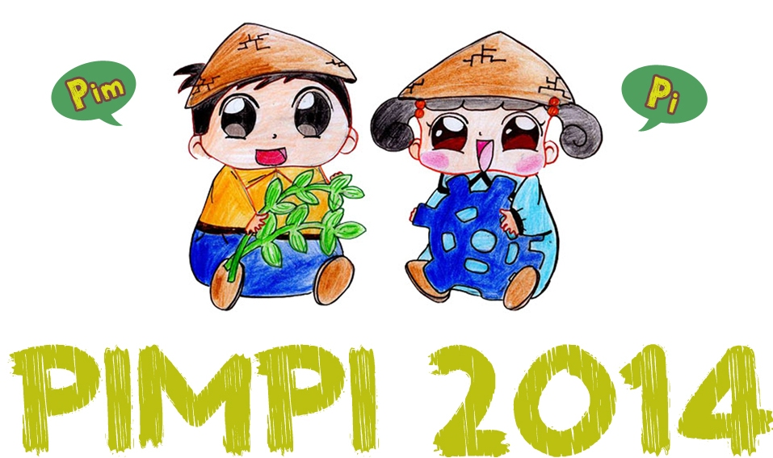

 | About
Dalam sejarah peradaban kemajuan suatu bangsa, pada awalnya selalu dimulai dari keberhasilan masyarakatnya memanfaatkan kelimpahan sumberdaya alam dan hasil-hasil pertanian. Keberhasilan tersebut didukung dengan adanya berbagai teknologi dan aplikasi yang lebih aplikatif dan dapat mempermudah proses-proses yang terkait dalam pertanian.
Berbagai pihak juga turut ambil bagian dalam keberhasilan ini karena tidak jarang juga informasi yang didapatkan oleh para petani untuk memperbaiki proses dalam pertanian itu berasal dari penyuluhan-penyuluhan yang diberikan oleh berbagai pihak terhadap para petani. Informasi yang diperoleh dapat berupa ilmu-ilmu mendasar maupun lanjutan tentang pertanian, maupun pengembangan aplikatif di bidang pertanian.
Melihat kenyataan tersebut di atas, maka FORCES IPB sebagai Unit Kegiatan Mahasiswa keilmiahan membulatkan tekadnya
untuk turut serta dalam mengembangkan agroteknopreneurship di Indonesia guna mencapai Indonesia mandiri dan
memunculkan rasa bangga terhadap pertanian negeri. Penyelenggaraan Pekan Inovasi Mahasiswa Pertanian
Indonesia (PIMPI) dengan tema "Gerakan Inovator Muda, Inspirasi Pertanian Indonesia" merupakan salah satu bukti
tekad tersebut. PIMPI merupakan rangkaian acara yang terdiri dari Kompetisi Inovasi dan Kreativitas Teknologi Pertanian , Gelar Karya Pertanian, dan Seminar Pertanian Indonesia. Acara ini dilaksanakan untuk mewujudkan Indonesia mandiri dan menimbulkan rasa bangga terhadap pertanian bangsa.
TEMA "Gerakan Inovator Muda, Inspirasi Pertanian Indonesia" |

 Kabinet Kupu-kupu
Kabinet Kupu-kupu